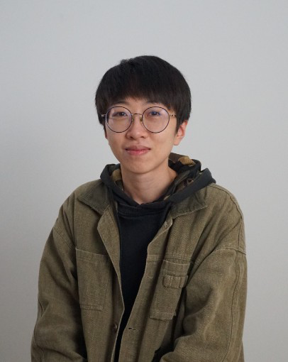

目前在夢想動畫虛實部擔任技術組組長一職，除了在拍攝現場解決軟硬體突發狀況外，也負責整體工作流程的優化和技術研發。 過去燈光合成師的經驗，讓我大大提升美感及專業能力，也了解後期製作的工作流程。後來擔任Python工程師到現在的Technical Artist，工作之餘也會接洽影像後製相關的案子，讓我的生活跨足在影像創作跟程式編譯中。 我喜歡圖像化有美感的事物，也喜歡完成程式後獲得的成就感。在學期間經過課程的邏輯訓練，使我在進入職場後能夠有效的解決各種問題並且快速吸收新知，更快進入狀況，過去的經歷更讓現在的我能夠成為美術跟工程技術端溝通的橋梁。

- 技能
- Unreal、TouchDesigner、Maya
- Python、Html、CSS、JavaScript、PostgreSQL
- Nuke、Fusion Studio、After Effects
- Illustrator、Photoshop